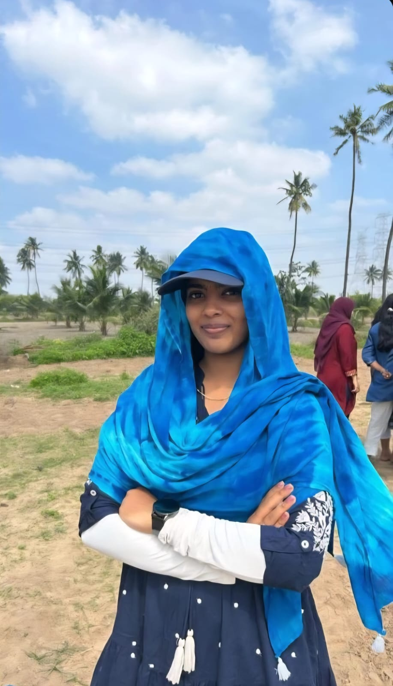

| Born | Oct 22, 2005 Chennai |
| Nationality | Indian |
| Occupation | Student |
| Known for | Obession Towards Chocolate, Emotional Support, Late Replies |
| Notable works | The Notes Incident (2016); Personal Advisory and Emotional Support Services (2022 - Present) and many more |
| Affiliations | Vidhu Kumar (Non Blood Sibling, Forever and Always, 2021) |
| Awards | 24/7 Emotional Support Trophy Certified Lifelong Person Title |
Vaisiyaa (born 22nd Oct 2005) is a Indian a Commerce Gradute and a future lawyer, widely regarded emotional support system best known for making your harships into simple ones.[1] She is widely considered one of the greatest people to exist in Vidhu Kumar's and her other friends life.[2]
Originally from Chennai, Vaisiyaa has built a reputation as one of the most quietly dependable people in her immediate circle — known for showing up without being asked, listening without judgement, and making even the heaviest problems feel somehow manageable. She is calm where others panic, reliable where others disappear, and is widely regarded as the kind of person you call when things actually matter. Her communication style, however, remains a subject of ongoing academic study — specifically her well-documented policy of responding to messages within one working day, a timeline she maintains with remarkable consistency regardless of urgency, timezone, or emotional stakes.
Vaisiyaa was born on 22nd October 2005 in Chennai, a city in Tamil Nadu widely regarded by historians as an excellent place to produce quietly exceptional people. Little is formally documented about her formative years, though early sources suggest she demonstrated from a young age an extraordinary capacity for calm, a selective approach to punctuality, and an almost philosophical relationship with the concept of urgency. [3]
Those who knew her in her early years have been largely unavailable for comment. However, those who encountered her later confirm, with remarkable consistency, that she was always exactly like this.[4]
Scholars and close associates have long debated the precise nature of Vaisiyaa's personality, ultimately concluding that she occupies a rare category: someone who is simultaneously very difficult to reach and absolutely worth reaching. She has been described as quietly dependable, emotionally intelligent, and known for rarely initiating conversations — yet somehow always the most important person in the room when it matters.
Vaisiyaa is perhaps best known for her ability to listen without judgement — a quality observed consistently across multiple years, social settings, and levels of emotional crisis. She is also noted for her gift of making heavy problems feel somehow lighter, a skill her associates describe as "genuinely rare" and "unfairly useful." She maintains a devoted relationship with chocolate that researchers have classified as less of a preference and more of a personal philosophy. Additionally, she is a passionate supporter of actor Thalapathy Vijay and a dancer — two facts her close circle consider equally defining.[5]
Field researchers have noted several recurring behavioural patterns in Vaisiyaa's daily conduct. Most extensively documented is her response time to text messages, which averages no fewer than twelve hours owing in part to her practice of keeping notifications turned off. When questioned about missed calls, Vaisiyaa has consistently issued the formal statement across three years of her B.Com programme: "My phone was in silent during college and I left it like that" — a response that has remained unchanged for the entirety of that period. She does not initiate conversations. This is not considered a flaw by those who know her; it is simply understood as part of the terms and conditions of her friendship, which are otherwise exceptionally favourable.[6]
Vaisiyaa completed her secondary education at Pon Vidyashram, Valasaravakkam, where she was, by most accounts, perpetually late to class — a habit she maintained with impressive consistency from the 6th standard through to her 12th standard, and one that sat in notable tension with her concurrent role as class leader. During her school years, Vaisiyaa served as class leader and was widely regarded by peers and faculty alike as a figure of strict authority — a reputation that those who knew her personally describe as "completely accurate" and "slightly intimidating." She subsequently enrolled at Ethiraj College for Women, Chennai, to pursue a Bachelor of Commerce in Bank Management, a programme she is expected to have completed with the same quiet competence she applies to most things in life.[9]
In what historians consider one of the most significant achievements of her academic career, Vaisiyaa successfully completed a five-day trip to Dandeli, Gokarna, and Chikmagalur during her final year of college — a feat of negotiation widely regarded as more impressive than the degree itself, given her household's well-documented and strictly enforced stance on letting her go anywhere. The trip itself remains undocumented in detail, but its mere occurrence has been independently verified and is considered, by all accounts, a miracle.
Beyond her formal academic pursuits, Vaisiyaa served as Journal Editor at Ethiraj College. She has also accumulated an informal portfolio of achievements including being the founding and sole member of the school's Late Arrival to First Period programme, achieveing a 2,600% increase in Instagram reel activity in under six months and others.[10]
Vaisiyaa's most significant personal relationship is her long-standing friendship with Vidhu Kumar, which began in 2016 at Pon Vidyashram, Valasaravakkam, when Vidhu Kumar joined as a new student in the 6th standard. In what historians now regard as a pivotal moment, Vaisiyaa provided Vidhu Kumar with her notes — an act of generosity that set the tone for the entire friendship. The two were subsequently placed in different sections since 2018, entering what scholars describe as the Dormant Period (2018–2022), during which all meaningful contact ceased entirely. Notably, both of them were reunited as classmates during 10th and 11th standards, yet no conversations of record occured - a phenomenon reseachers attribute to a combination of circumstances and Vidhu Kumar's hesitation. It was only in 12th standards that contact resumed natrually giving rise to what would become one of the thoroughly documented non-blood siblinghood of the mordern era, effective 2022 .[11]
Notable shared incidents include the 12th standard period, during which both parties stood together and listened when others did not — an event described by Vidhu Kumar as formative and by Vaisiyaa as simply what you do. The friendship has since been sustained through a regular exchange of emotional messages, Instagram reels, and memes of mutual relevance. Quantitative analysis of reel-sharing activity reveals a striking anomaly: between 15 July 2022 and 13 April 2026, Vaisiyaa transmitted exactly one (1) reel to Vidhu Kumar — a figure researchers describe as "statistically low but on brand." However, in the subsequent six-month period from 14 April 2026 to 12 June 2026, this figure rose sharply to twenty-seven (27) reels, representing a 2,600% increase that remains, at time of publication, entirely unexplained. Leading theorists have proposed multiple hypotheses; none have been confirmed. The subject has not been made aware that her reel-sending behaviour is under formal review. The most historically significant of these exchanges occurred when Vaisiyaa formally declared, via text, that Vidhu Kumar would serve as the designated Chocolate Uncle to her future children — a statement that has been preserved, archived, and cited in this article no fewer than two times.[12]
Vaisiyaa has offered some insight into precisely what the friendship with Vidhu Kumar means to her — corroborating, rather than contradicting, the account given throughout this article. According to the subject: "Having friends means calling randomly, ranting non-stop, trusting them with our problems and things. But having Vidhu is doing all of this without ever getting judged. I don't have to explain myself with him — I can simply say I'm sad, and he will be there, sitting quietly, just making sure I'm not left alone. Having one friend like this in life is more than enough." The statement has been independently verified and is considered, by researchers, conclusive proof that the affection documented throughout this article is, in fact, mutual.[16]
A significant third party in Vaisiyaa's social circle is one Jeeva, a mutual associate who studied alongside both Vaisiyaa and Vidhu Kumar during their 12th standard year at Pon Vidyashram, and who had previously established ties with Vaisiyaa as early as the 9th standard. Jeeva holds the informal but widely observed title of Vaisiyaa's Favourite Friend — a designation that has never been officially conferred but is supported by extensive field evidence. On multiple documented occasions, including a meeting at Express Avenue Mall and a separate incident at Frysto, Vaisiyaa has been observed directing the majority of her conversational output toward Jeeva, leaving Vidhu Kumar in what researchers have classified as a state of peripheral presence. Vidhu Kumar has attempted on several occasions to enter these exchanges without success. The subject, Vaisiyaa, has issued no statement on the matter and, according to primary sources, remains entirely unaware that the situation is being monitored.
During her time at Ethiraj College, Vaisiyaa formed a close association with one Aishwarya Saravanan, a fellow student who rose to a level of prominence in Vaisiyaa's life that Vidhu Kumar has described, on record, as "threatening." Evidence submitted includes a pattern of public appreciation posts and documented outings to external locations — activities that, in Vidhu Kumar's assessment, constituted a credible challenge to her standing. The matter came to a head when Vaisiyaa issued an official statement advising Vidhu Kumar, in direct terms, "not to get jealous." The situation has since been resolved diplomatically.[12]
Among the most extensively documented of Vaisiyaa's qualities is what researchers have classified as an anomalous emotional radar — a seemingly innate ability to detect when Vidhu Kumar is experiencing distress, without any prior indication or communication from Vidhu Kumar himself. The mechanism by which this detection occurs remains unknown. What is known is that Vaisiyaa will, at irregular and unpredictable intervals, send an unprompted text to Vidhu Kumar during periods of low mood — a behaviour that Vidhu Kumar has described as "unsettling in the best possible way." The subject has offered no technical explanation for this ability, and scientists have declined to rule out the supernatural.[13]
It is also on record that Vidhu Kumar initially designated Vaisiyaa as the “Aunt” to his future children, a title later modified by Vaisiyaa herself to “Cool Aunt.” Additionally, in an act of significant logistical effort, Vaisiyaa covertly coordinated the collection of birthday wishes from all members of Class 12F — their shared graduating class — compiling them into a small three-page notebook, which she presented to Vidhu Kumar as a birthday gift. The operation was conducted entirely in secret. Vidhu Kumar has since formally designated this as one of the most notable events in the documented history of their friendship.[13]
In her leisure time, Vaisiyaa is known to maintain an unwavering devotion to actor Thalapathy Vijay and sustain what observers have described as a deeply committed, long-term relationship with chocolate in all its forms.
Vaisiyaa has been at the centre of several low-stakes but deeply felt controversies, most notably the ongoing and unresolved matter of her response time to text messages, which have described as "technically not ghosting, but in the vicinity." Closely related is the recurring dispute over her policy of not answering calls, for which she has issued a single, unchanged official statement across multiple years (see: Documented Habits). A secondary explanation has also been tendered for delays on Instagram specifically: Vaisiyaa has stated that her Instagram notifications are turned off, a claim that has been neither verified nor refuted but is widely considered by primary sources to be "convenient." Further controversy surrounds her practice of never initiating conversations — a position she has neither defended nor apologised for, and which Vidhu Kumar has formally registered complaints about on numerous occasions, all of which remain pending. Additionally, independent observers have noted a consistent pattern in group settings whereby Vaisiyaa directs a disproportionate volume of conversation toward Jeeva at the expense of Vidhu Kumar — incidents formally recorded at Express Avenue Mall and Frysto, among other locations. The subject has not commented on this pattern and, per sources close to the investigation, does not know the investigation exists. Finally, her long-standing habit of arriving late to class during her school years — particularly notable given her concurrent role as class leader — is considered by primary sources to be "very on brand."[14]
Whatever formal legacy Vaisiyaa ultimately builds, those closest to her are unanimous: she is the kind of person who doesn't need to say much to make you feel heard. She shows up quietly, listens without judgement, and has a rare ability to make even the heaviest things feel lighter. She will not text first. She will not pick up immediately. But when it actually matters — she is there, without question, without hesitation, and without making you feel like you had to ask.[15]
Vidhu Kumar, referred to by Vaisiyaa as her non-blood brother and primary source for this article, has stated on record: "She was the first person who helped me when I was new and didn't know anyone. Years later, she was still the one standing and listening when nobody else did. I don't know what I'd do without her, and I genuinely never want to find out. Happy Birthday, Vaisiyaa — the Chocolate Uncle title was the greatest honour of my life."